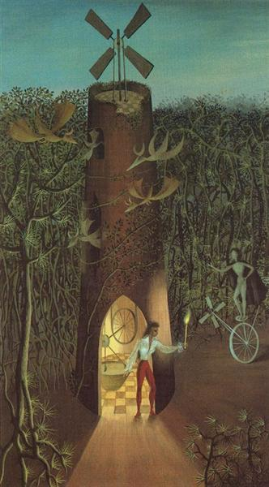
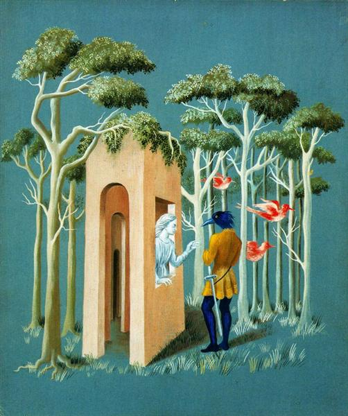
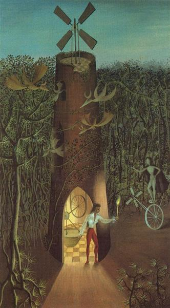
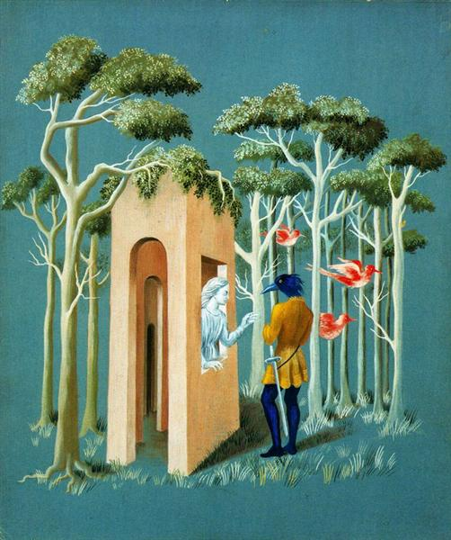

February
Surrealism
About
Surrealism thrived between World War I and World War II in Europe. Growing from the movement of Dadaism, which emphasized anti-art, Surrealism tried to focus on positive use of the imagination and a channelling into the unconscious. From doing so, the goal was to be able to better understand the contradictions and negativity Dada intended to similarly seek out, and to allow for revolutionary thinking to flow.
As defined by André Breton's Surrealist Manifesto in 1924, Surrealists wanted to unite the conscious and unconscious so that the rational real-life could exist along with the world of fantasy in one's mind.
Surrealism existed in many forms of art and writing. In painting, common characteristics involved an artist's use of free form and an intent of liberation. There is a wide range of artwork from painters, including seemingly bizarre, irrational pieces and complex, dreamlike scenes. The Surrealists intended to take viewers out of their comfort zone while expressing themselves with great depth.
Week One
Name: Remedios Varo
Years: 1908, Spain - 1963, Mexico
Nationality: Spanish, Catalan
Associated Movement: Surrealism
Pieces Listed:
- The Souls of the Mountain, 1938
- Magic Grotto, 1942
- My friend Agustín Lazo, 1945
- Garden of Love, 1951
- Still life Reslicitando, 1963
 




Week Two

Name: Joan Miró
Years: 1893, Spain - 1983, Spain
Nationality: Spanish, Catalan
Associated Movements: Surrealism, Cubism, Fauvism, Dada
Pieces Listed:
- Portrait of a Young Girl, 1915
- Prades, the Village, 1917
- The Ear of Grain, 1922-23
- The Tilled Field, 1923
- The Beautiful Bird Revealing the Unknown to a Pair of Lovers, 1941